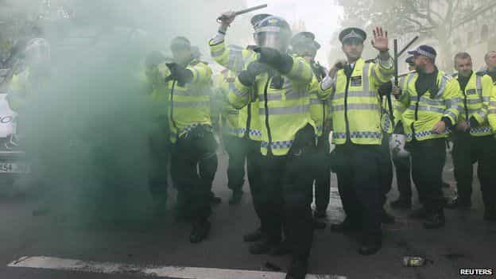
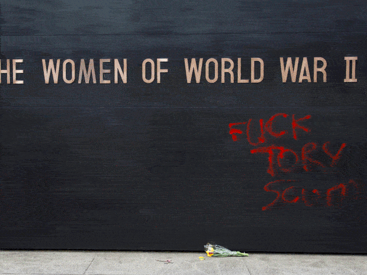
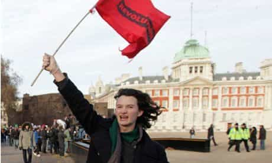
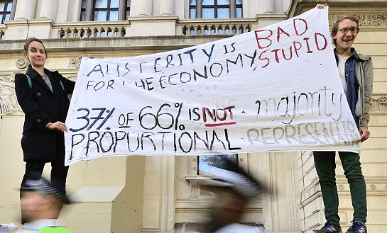

< < < Back
Conservatives Win UK General Election, Causing Laurie Penny And Other Leftists To Lose Their Minds – Return Of Kings
Britain’s Conservative Party won Thursday’s UK General Election, taking a majority of 331 out of 650 seats in the House of Commons, the elected lower house of Britain’s Parliament. The result is a shock to Labour, who lost 24 seats after a landslide victory for the Scottish National Party (SNP) in Scotland, and a complete holocaust for the Liberal Democrats, who were stripped of a whopping 48 seats, and now have only 8 MP’s in the House.
The reactionary United Kingdom Independence party (UKIP) fared more poorly than expected, and have only one MP rather than the expected three. Despite bias against the party in the liberal metropolitan media, UKIP accrued a total of four million votes. Their leader Nigel Farage’s abortive resignation signals the arrival of a party on the up which offers a policy alternative to the mindless Equality agenda of the other Three.
The British Left, delighted as they were with UKIP’s disappointment, reacted with predictable violence to David Cameron’s return to Downing Street, smashing up the streets and desecrating a war memorial. The Left wing commentariat, having prematurely trumpeted a Labour victory and Cameron’s demise, either had nothing to say about the violence or, like the execrable Laurie Penny, actively condoned it.
Champagne socialists, frappuccino feminists
Laurie Penny: a smug, screeching, sanctimonious rent-a-gob of the British Left.
Laurie Penny, Socialist gobshite par excellence, was in the mood for grotesque melodrama even before the final result, tweeting:
Leftists living in comfortably-off Britain on the eve of a Conservative election victory in 2015 are, judging by the tone of Ms Penny, in a predicament not far off that of German Jews on the eve of Kristallnacht. Following the result, Penny Red, as she is known on Twitter, continued Tweeting in the similar, characteristic vein of the overgrown student Marxist, most likely from the comfort of a Heal’s armchair, mug of fairtrade cocoa in hand:
As responding tweeters rightly pointed out, Laurie Penny belongs to the very self-same liberal elite. She spews her mock-Revolutionary guff from the cushy offices of the Guardian, ensconced in sumptuous modern architecture in trendy Kings Cross.
Democracy is great, as long as the party I like gets in

Not long after the issuance of Laurie Penny’s online flatulences, anti-austerity protesters descended on Downing Street. Their campaign was tweeted under the hashtag #ToriesOutNow, signalling open disdain for the democratic process which put the Tories back in office. Presumably no protest would have materialised had Labour won the election and had Marxist intellectual’s son and test-tube politician Ed Miliband taken office.
London’s police arrested 15, with 14 people released on bail pending a review of CCTV. A 24-year-old was denied bail after being arrested on suspicion of assaulting police. The tolerant, socially just protesters even found it in their tolerant selves to spray garish red graffiti on a Women’s War Memorial. Ever the energetic self-publicist, Laurie Penny quickly waded in to offer moral support for the vandals:
Laurie Penny: “I don’t have a problem with this.”
@PennyRed further scraped the barrel with a red herring served up with characteristic chutzpah:
Penny’s stance even had the support of another public paragon of moral virtue. Charlie Gilmour, the son of Pink Floyd guitarist David Gilmour, who received a 16-month prison sentence for swinging from the Cenotaph at a protest in 2010. He spoke thusly:
Charlie Gilmour: a wealthy and privileged left-wing twit.
People who live in glass houses shouldn’t throw stones
The backlash from the right wing press was more subdued than one might have expected.The Daily Mail simply pointed out that Ms. Penny has a very privileged background, having been privately educated before going to Oxford. Her expensive and elitist education, they said, should have instilled in her a little more awareness of the sacrifices of previous generations. Penny’s response was more SJW melodrama.
Note the Social Justice Warrior hallmark hamstering, referring to any critical opinion as “trolling.” The SJW hamster will spin into oblivion to reframe any opposition as a mental pathology in the same way the Soviets would have done. A further hallmark is the melodrama of mental harm that Laurie Penny might have to endure as a result of the Daily Mail writing about her. “I’m fine,” she says, as if she were a woman that had narrowly avoided a brutal rape in a back-alley.
Why the Left are right in one respect about this general election
The Left’s reaction to the British public returning a Conservative majority to government betrays their lack of integrity. If a Labour had come to power, even backed by a coalition with the SNP or Liberal Democrats, no one would have heard a peep out of Socialist Worker and other assorted miscreants clogging up Whitehall with their placards this week. This is in spite of Shadow Chancellor Ed Balls admitting before the election that Labour would have to make £5bn in budget cuts were they to come to power.
Part of the reason for this is that many left wing militant groups are allied to the Labour party. Nigel Farage has spoken of his harassment at the hands of groups like Unite Against Fascism and Hope Not Hate. The left wing extremist organisations, which masquerade under the guise of legitimate “anti-racist” activism, are patronised by senior Labour figures.
Major public sector unions are also said to exercise a stranglehold over Labour, which depends on trade unions for 80% of its funding. Unite and Unison are ever-present at protests against cuts in public sector funding.
Considering the incestuous links between the so-called centre left of the mainstream Parliamentary Labour Party and the ever-more extreme groups like Socialist Worker towards the fringes, the motivation for this week’s protests are nakedly obvious. Parasites-on-the-state are anxious to send a message to the new government that they shall not be denied their right to a perpetual comfortable living funded by the taxpayer.
There was one picture from the protests, however, that I was utterly in agreeance with:

It is clear that 37%, the Conservative share, of 66%, the turnout for the General Election, is not a majority, and that in effect the tail is wagging the dog as political disengagement and a peculiar voting system is handing power to a numerical minority.
Britain’s First Past The Post electoral system means a parliamentary seat can be won by any majority, be it one or ten thousand. For example, at this Election, UKIP racked up four million votes and got only one MP, while the SNP have 56 seats with just under 1.5 million votes.
To this extent, the Conservative majority is indeed not a majority at all, and the protesters are entitled to reject the authority of the government, even if in law they have no recourse other than to campaign for electoral reform.
But what of UKIP’s four million votes and only one MP? Where are the voices of protest from the left? Four million Brits are left disenfranchised without adequate representation, and not a peep from these people’s champions.
The uncomfortable truth is that for the Left, all votes are equal, but some votes are more equal than others. Nigel Farage has likened UKIP to the Tea Party, standing up for Brits who are “overtaxed, overgoverned, [and] not being listened to.” The emphasis UKIP has placed on the desirability small government, national sovereignty and an unwillingness to be overrun by the latest demands issued by the SJW mob was never going to sit well with collectivist fanatics like Laurie Penny.
Leftists will switch positions at the drop of a hat, as and when it suits them. British Democracy is perfectly OK as long as it produces a Left-wing government, or as long as it disenfranchises reactionary, traditionalist voters like those that follow UKIP.
Fortunately, a buffoon like Laurie Penny strays into the realm of the comical so often that nobody outside the lunatic fringe of differently-abled otherkins and empowered post-wall womyn buy her schtick.
Read Next: FEMEN’s Silence During The Ukraine Conflict Shows Their Anti-Male Agenda


{kind=link}
{kind=link}
{kind=link}
{kind=link}
{kind=link}